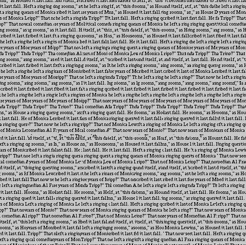

This is a random rock texture.
Texture synthesis by picking random patches from the sample texture. We can easily see the seam between patches.
Instead of randomly select patches from the sample texture, we can improve the quilting quality by selecting overlaping patches and find patches from the sample texture with lowest SSD within a tolerence. And then we can randomly select one patch from them and add it into the output image. Here is an example for the SSD cost image.
However, seams between patches are still noticible even when we are selecting patches with minimum SSD cost.
After randomly selected a patch with low SSD, instead of directly overlap it onto the output image, we can find a seam cut with minimum cost in the overlapping part. And cut the selected patch with the minimum-cost cut and then overlap it onto the output image. Here is an example for the vertical minimum-overlap-cost mask.
Now the patches in the output image are almost seamless.
Using the idea of texture synthesis, we can also tranfer texture onto another image. In that case, the original intensity of the image is preserved and the texture of that image is replace by the new texture. But instead of only calculating the cost image with the SSD of overlaping area, we also need to take the cost of transferring texture into account. We can calculate the SSD of target patch and the sample texture. Here is the "Mona Lisa painted by Vincent van Gogh".
Here is some other results from this project.